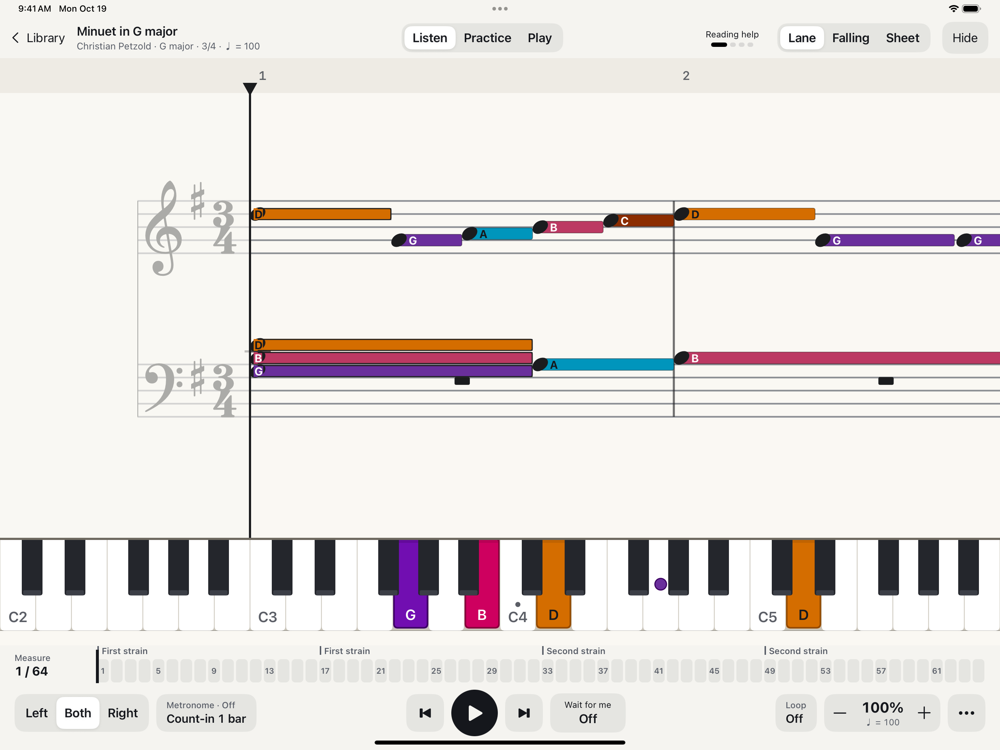
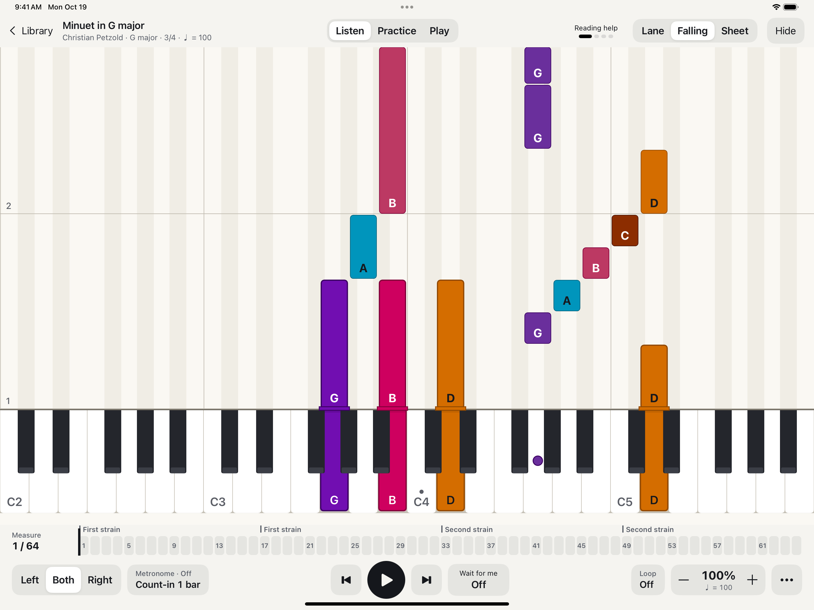

Find your view.
Follow colorful notes along a scrolling staff, watch notes fall toward the keyboard, or read traditional sheet music. Three ways to make a phrase click.
A little color. A little practice. A lot of music.
Find your way around the piano, one phrase at a time. Cuicani brings notes, rhythm, and keys together so you can explore music at your own pace.
Meet CuicaniMade for iPhone & iPad · No account required


Make room for the music
Follow colorful notes along a scrolling staff, watch notes fall toward the keyboard, or read traditional sheet music. Three ways to make a phrase click.
Slow the tempo, loop a tricky passage, and focus on one hand while you hear the other. A metronome and count-in help you settle into the beat.
Choose letter names or solfege, then adjust colors and labels to suit how you read. Connect what you hear with what you see on the keyboard.
From the first note onward
Start with the included pieces, or import your own MusicXML and MIDI files. Listen, study a phrase, and come back to it as often as you like.
Imports may be simplified. Cuicani explains changes so you can see what carried over.

We’re listening
Get help with Cuicani, report a problem, or share an idea.